位姿表示与变换
- 位姿建模分为两种，一种位置+姿态分开，一种位姿一体化建模
位置+姿态
位置一般可以直接用平移向量进行表示，关键在于姿态表示，对于姿态表示有几个方面
是否可以表示所有姿态，是否存在奇异性
求差，求导（速度）计算是否方便
姿态速度与关节速度之间的雅可比矩阵是什么
李群（\(SO_3\)）
\(SO_3\)就是所谓的旋转矩阵
运算
求差
求导：旋转矩阵的导数个人理解是每个轴方向向量随时间变换的导数，旋转矩阵的导数与角速度（个人理解就是轴角的导数）之间的关系
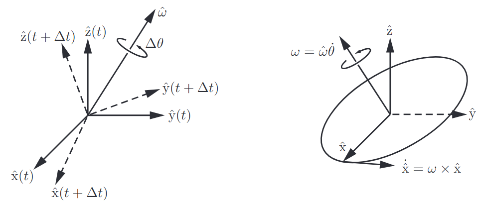
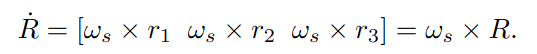
李代数（\(so_3\)）
李代数由三维向量转化而来的反对称矩阵构成，注意同一个李群与两类李代数相关
- 旋转向量构成的李代数：通过罗德里格斯公式构建对数/指数映射，旋转向量表示为\(\phi=\theta\bm{a}\)
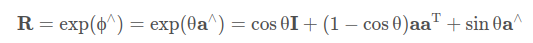
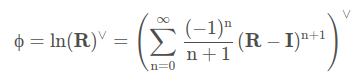
- 角速度构成的李代数：可以映射到两个角速度，一个表示在世界坐标系下，一个表示在动系下，前者写成\(\dot{R}=[\omega]R\)
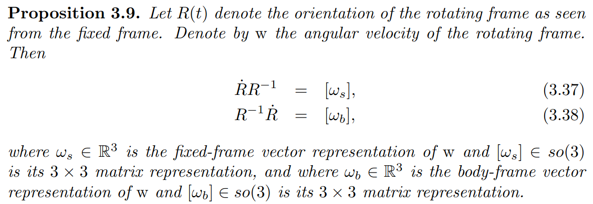
- 两种李代数之间的关系：在特定初始条件下，利用时间t作为参数，对角速度进行积分得到旋转向量
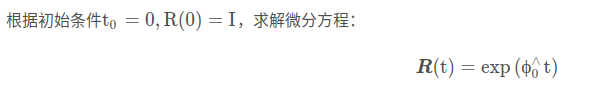
李代数代表了李群的切空间
四元数\(r=[a,V]\)
V为三维向量
运算：
$[a,V] =[ab-VU,aU+bV+VU] $
由叉乘的反交换律可得，\(r_1\cdot r_2=r_2^*\cdot r_1=r_2\cdot r_1^*\)
\(r^{-1}=\dfrac{r^*}{\|r\|^2}\)
定义算子\(vec(r)=[a,v_1,v_2,v_3],H^+(r)=\begin{bmatrix}a & -v_1 & -v_2 & -v_3 \\v_1 & a & -v_3 & v_2 \\v_2 & v_3 & a & -v_1 \\ v_3 & -v_2 & v_1 & a \end{bmatrix} , H^-(r)=\begin{bmatrix}a & -v_1 & -v_2 & -v_3 \\v_1 & a & v_3 & -v_2 \\v_2 & -v_3 & a & v_1 \\ v_3 & v_2 & -v_1 & a \end{bmatrix}\)，则\(vec(r_1r_2)=H^+(r_1)vec(r_2)=H^-(r_2)vec(r_1)\)
纯四元数：a=0
几何映射：
绕T轴旋转\(\theta\)角： \(a=cos(\theta/2),V=sin(\theta/2)\cdot T\)
几何变换：\(v_1=rv_0r^{-1}\)（将V视为纯四元数）,由于\(\|r\|=1\)，所以\(v_1=rv_0r^{-1}=rv_0r^*\)
反向旋转即为四元数的共轭
四元数雅可比矩阵与几何雅可比矩阵（轴角雅可比矩阵）之间的关系？
轴角/旋转向量
- 旋转向量表示为\(\phi=\theta\bm{n}\)，其实四元数与轴角是同一种表示方法，不过四元数建立了系统的运算法则，更加便于计算
转换关系
| 李群 | 李代数 | 四元数 | 轴角 | |
|---|---|---|---|---|
| 李群 | \ | …… | 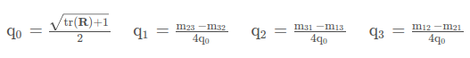 |
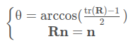 |
| 李代数 | …… | \ | ||
| 四元数 | 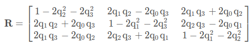 |
\ | ||
| 轴角 | 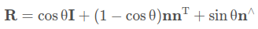 |
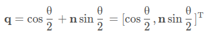 |
\ |
位姿一体化
- 位姿一体化建模的情况下，二者之间是否还存在量纲不一致问题？
对偶四元数\(q=q_r+q_d\epsilon\)
对偶数 \(t=<a,b>=a+b\epsilon\)
\(\epsilon\)是一个与实数域垂直的维度，其满足\(\epsilon ^2=0\)
运算：
\((a_1+b_1\epsilon)(a_2+b_2\epsilon)=a_1a_2+(a_1b_2+b_1a_2)\epsilon\)
\(t^{-1}=\dfrac{t^*}{\|t\|^2}\)
复杂运算：利用泰勒展开可得 \(f(t)=f(a)+f'(a)b\epsilon\)
对偶四元数\(q=q_r+q_d\epsilon\)
运算：
存在三种共轭：对偶四元数定义：\(q^*\),对偶数定义：\(\overline{q}\),复合：\(\overline{q}^*\)
范数：对偶四元数的范数还是对偶四元数，但是实部中V为实数：\(\|q\|=\sqrt{qq^*}=\|q_r\|+\dfrac{q_dq_r^*+q_rq_d^*}{2\|q_r\|}\epsilon=\sqrt{\|q_r\|^2+2vec(q_r)\cdot vec(q_d)\epsilon}\)
对于四元数和对偶四元数都满足：\((q_1q_2)^*=q_2^*q_1^*\)
对于对偶数和对偶四元数都满足：\(\overline{(q_1q_2)}=\overline{q_1}\overline{q_2}\)
对偶四元数满足：\(\|q_1q_2\|=\|q_1\|\|q_2\|\)
定义针对对偶四元数的Hamilton算子：\(H^{\pm}(q)=\begin{bmatrix}H^{\pm}(q_r) & 0 \\ H^{\pm}(q_d) & H^{\pm}(q_r)\end{bmatrix}\)，即可得到与四元数类似的计算公式
单位对偶四元数条件：\(\|q_r\|=1\quad and\quad q_dq_r^*+q_rq_d^*=0\)
几何映射：
待变换四元数\(v_0\)写成对偶四元数\([1,v_0]\)，变换后的对偶四元数为\([1,v_1]=q[1,v_0]q^*\)，u为变换对偶四元数
旋转：将四元数r拓展成单位对偶四元数\([r,0]\)，即为q
平移：将平移向量 \((p_1,p_2,p_3)\) 写成四元数\(p=[0,(p_1,p_2,p_3)]\)，再转换为单位对偶四元数\(q=[1,\dfrac{1}{2}p]\)。注意，待变换四元数的平移变换与参考坐标系的平移变化相反
旋转和平移相乘后仍为单位对偶四元数
给定一个对偶四元数，可以拆解为先平移后旋转的形式：\(r=q_r\quad and \quad p = 2q_dq_r^*\)
当三维空间中的直线用对偶四元数表示，这种坐标称为Pluecker坐标，对应的线称为Pluecker线
机械臂运动学模型
- MDH参数与两关节之间的变换四元数关系：
\(\begin{aligned} q_r &=[h_1,h_2,-h_3,h_4];\\ q_d &=[\dfrac{-d\cdot h_4-a\cdot h_2}{2},-\dfrac{-d\cdot h_3+a\cdot h_1}{2},\dfrac{-d\cdot h_2-a\cdot h_4}{2},\dfrac{d\cdot h_1-a\cdot h_3}{2}];\\ h_1 &=cos(\dfrac{\theta}{2})cos(\dfrac{\alpha}{2}),h_2=cos(\dfrac{\theta}{2})sin(\dfrac{\alpha}{2}),h_3=sin(\dfrac{\theta}{2})sin(\dfrac{\alpha}{2}),h_4=sin(\dfrac{\theta}{2})cos(\dfrac{\alpha}{2}) \end{aligned}\)
- 雅可比：公式比较复杂，参见论文《Two-arm Manipulation: From Manipulators to Enhanced Human-Robot Collaboration》
双臂机器人
两手末端的相对位姿表示为：\(x_r^{E2}=x_{E2}^*x_{E1}\)
两手末端中间的绝对位姿表示为：\(x_a=x_{E2}(x_r^{E2})^{0.5};(x_r^{E2})^{0.5}=exp(\dfrac{1}{2}log(x_r^{E2}))\)